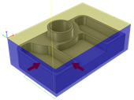

Bossage rectangulaire XY
Coin extérieur XY
Dans la zone de dessin, sélectionnez une ou plusieurs faces sur le brut. Les faces sélectionnées déterminent les options Type de palpage' disponibles.
Remarque: pour sélectionner des faces sur le modèle, remplacez la valeur de Mode de palpage par 'Modèle.
Exemples de faces sélectionnées et d'options Type de palpage:
|
 |
Bossage rectangulaire XY |
Coin extérieur XY |
 |
 |
Surface Y |
'''Angle le long de l'axe Y''' |
 |
 |
Paroi X |
Bossage circulaire XY' |